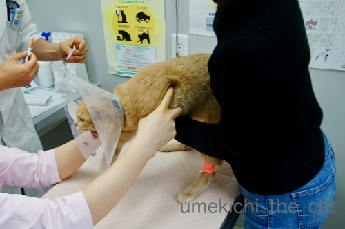
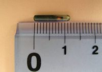
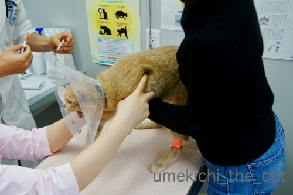
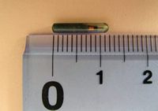

梅吉、マイクロチップを装着する。 [梅吉]
今月12日は梅吉の定期受診の日でした。
梅吉は中性脂肪値が高い体質なので（生活習慣ではありません）
２歳半頃から薬を飲ませています。
（経緯に興味がある方はお薬生活が始まった頃の記事か
タグの“病院”でご覧になってくださいね。）
この日はご機嫌が悪くて先生の顔を見るなり「シャーーーーッツ！！」。
採血した別室からも「うぉ〜ん！ フシャーーーッツ！！」と
派手な声が聞こえてきました(⌒-⌒;

採血から帰ってきたところ。あちのピンクの包帯がまぶしいw
採血結果は・・・
肝機能が下がっていたのは何よりだったんですが以前よりも中性脂肪値が上がっている。
そこで一年とちょっと飲み続けていたカルニチンという錠剤を別の薬に変えることになりました。

今度の薬はメトグルコという代謝を上げて脂肪を分解する水薬。
（私が飲みたいwww）
朝夕0.2ccずつ注射器で吸い上げてフードの上に垂らします。
錠剤を乳鉢ですりつぶす作業がなくなりました。
この薬、なめてみたらちょっと苦いのですが食欲大魔神の梅吉は気にせず食べてます![[手（チョキ）]](https://blog.ss-blog.jp/_images_e/87.gif)

って採血が終わって結果を聞いてもまだ診察台の上の梅吉。
この日はむしろここからがメイン。

エリカラをつけて
![[猫]](https://blog.ss-blog.jp/_images_e/101.gif) むちゃくちゃ いやなよかんー！
むちゃくちゃ いやなよかんー！

ぷすっと。
あにすんじゃー！
これで終了。マイクロチップが入りました。エリカラつけてから終わるまで５秒くらい？
採血よりずっと早く終わります。
先日テレビでマイクロチップは麻酔なしで入れられる、と聞いてんんん？
色々調べてみて病院で先生に確認するとその通りだとのお返事。
私はマイクロチップの装着は全身麻酔の上メスで皮膚を切って埋め込むものだと思っていました。
なので去勢手術の時にマイクロチップまで気が回らなかったことをとっても後悔していたのです。
が、今回偶然目にしたテレビのニュースで正しい情報を知りここ数年のモヤモヤが解決しました。
同時にちゃんと調べていなかった自分の不勉強も反省・・・

（環境省のHPよりお借りしました）
マイクロチップの大きさです。
これを注射器状のもので首の後ろにぷすっと刺して挿入。
装着後梅吉は全く気にする様子はなく
家に帰った後は元気に走り回って遊んでいました。
マイクロチップを入れたあたり、触っても全くわかりません。
マイクロチップについては体に異物を入れることに抵抗があったり
そこまでしなくてもという意見、その他さまざまな理由で反対されている方もいらっしゃいます。
飼い主さんの考え方はそれぞれです。
なのでお勧めしているわけではありません。
ただ、麻酔＆手術不要で装着できて（個体差にも寄ると思いますが）
装着後も影響は見られないことを知っていただきたく
実体験を元に記事にしてみましたm(_ _)m
麻酔が必要なら無理かな・・・と諦めていた方もいらっしゃるかもしれないし。
とっくに知っていたわ！という方がほとんどかと思いますけどw(⌒-⌒; )
マイクロチップの情報を読み取るリーダーの普及率は
残念なことに市町村によって差があるようです。
大阪では大阪市内の全保健所、市や府が管理する保護施設すべてにリーダーがあるそうです。
もしも災害などで梅吉とはぐれてしまっても
私たちの元に帰ってくる確率が格段に高くなったかな、と思っています。

とある日。

このお手手にニヤニヤする0(≧▽≦)0
 ↑ガブッと一押し↑
↑ガブッと一押し↑
マイクロチップの費用は4000円でした。
これは病院によってばらつきがあるようです。動物病院って言値だから・・・w
梅吉のかかりつけの先生はマイクロチップ推進派なんですって。
なのでお値段も良心的だったのかもしれません。
ペットの情報登録は環境省の下にあるAIPOという団体へ手続きをします。
装着後の手続きはこんな感じなんですが１〜４の項目は病院でやってくれました。
私は５の登録完了のハガキが届くのを待つだけです。
ただ登録される情報は飼い主の住所・氏名・連絡先・装着した動物病院の情報のみ。
動物の既往歴、飲んでいるお薬などは登録できません。
災害時に飼い主が亡くなり残された動物に運良く落ち着き先が見つかっても
（かかりつけ病院に連絡が取れれば良いですが）病歴や必要な治療を伝えることは不可です。
あわせて登録した情報は何らかの手続きを踏まないと
（ここは詳しい内容はわかりませんでした。お役所的な手続き？）
確認することは出来ないようです。
飼い主の住所変更などがあっても書類やwebで変更を申請します。
自分で情報を書き換えるシステムではありません。
昨今の役所の情報登録はミスが多いように思うので正しく情報が登録されているのか若干不安だし
確認するハードルが高いのも気になります。
この辺りもっとマイクロチップの装着が一般的になれば飼い主側からの要望として
環境省（AIPO）に改善の陳情書などを出すこともできるんじゃないかなぁと思ってます。
（クリックで大きくなります）
今回病院でもらってきたパンフレット。
マイクロチップ装着の推進役である
環境省のHPにこの最新版のパンフレットが掲示されていないのも気になります。
古いバージョンのが載っているだけ。ページ自体もとっても素っ気ないし。
あんまり乗り気じゃないのかしら・・・(-_-メ)
〜追記〜
日本獣医師会のHPにマイクロチップの詳しい情報のページがありました。
参考までに＾＾
梅吉は中性脂肪値が高い体質なので（生活習慣ではありません）
２歳半頃から薬を飲ませています。
（経緯に興味がある方はお薬生活が始まった頃の記事か
タグの“病院”でご覧になってくださいね。）
この日はご機嫌が悪くて先生の顔を見るなり「シャーーーーッツ！！」。
採血した別室からも「うぉ〜ん！ フシャーーーッツ！！」と
派手な声が聞こえてきました(⌒-⌒;

採血から帰ってきたところ。あちのピンクの包帯がまぶしいw
採血結果は・・・
肝機能が下がっていたのは何よりだったんですが以前よりも中性脂肪値が上がっている。
そこで一年とちょっと飲み続けていたカルニチンという錠剤を別の薬に変えることになりました。

今度の薬はメトグルコという代謝を上げて脂肪を分解する水薬。
（私が飲みたいwww）
朝夕0.2ccずつ注射器で吸い上げてフードの上に垂らします。
錠剤を乳鉢ですりつぶす作業がなくなりました。
この薬、なめてみたらちょっと苦いのですが食欲大魔神の梅吉は気にせず食べてます

って採血が終わって結果を聞いてもまだ診察台の上の梅吉。
この日はむしろここからがメイン。

エリカラをつけて

ぷすっと。
これで終了。マイクロチップが入りました。エリカラつけてから終わるまで５秒くらい？
採血よりずっと早く終わります。
先日テレビでマイクロチップは麻酔なしで入れられる、と聞いてんんん？
色々調べてみて病院で先生に確認するとその通りだとのお返事。
私はマイクロチップの装着は全身麻酔の上メスで皮膚を切って埋め込むものだと思っていました。
なので去勢手術の時にマイクロチップまで気が回らなかったことをとっても後悔していたのです。
が、今回偶然目にしたテレビのニュースで正しい情報を知りここ数年のモヤモヤが解決しました。
同時にちゃんと調べていなかった自分の不勉強も反省・・・

（環境省のHPよりお借りしました）
マイクロチップの大きさです。
これを注射器状のもので首の後ろにぷすっと刺して挿入。
装着後梅吉は全く気にする様子はなく
家に帰った後は元気に走り回って遊んでいました。
マイクロチップを入れたあたり、触っても全くわかりません。
マイクロチップについては体に異物を入れることに抵抗があったり
そこまでしなくてもという意見、その他さまざまな理由で反対されている方もいらっしゃいます。
飼い主さんの考え方はそれぞれです。
なのでお勧めしているわけではありません。
ただ、麻酔＆手術不要で装着できて（個体差にも寄ると思いますが）
装着後も影響は見られないことを知っていただきたく
実体験を元に記事にしてみましたm(_ _)m
麻酔が必要なら無理かな・・・と諦めていた方もいらっしゃるかもしれないし。
とっくに知っていたわ！という方がほとんどかと思いますけどw(⌒-⌒; )
マイクロチップの情報を読み取るリーダーの普及率は
残念なことに市町村によって差があるようです。
大阪では大阪市内の全保健所、市や府が管理する保護施設すべてにリーダーがあるそうです。
もしも災害などで梅吉とはぐれてしまっても
私たちの元に帰ってくる確率が格段に高くなったかな、と思っています。

とある日。

このお手手にニヤニヤする0(≧▽≦)0
マイクロチップの費用は4000円でした。
これは病院によってばらつきがあるようです。動物病院って言値だから・・・w
梅吉のかかりつけの先生はマイクロチップ推進派なんですって。
なのでお値段も良心的だったのかもしれません。
ペットの情報登録は環境省の下にあるAIPOという団体へ手続きをします。
装着後の手続きはこんな感じなんですが１〜４の項目は病院でやってくれました。
私は５の登録完了のハガキが届くのを待つだけです。
ただ登録される情報は飼い主の住所・氏名・連絡先・装着した動物病院の情報のみ。
動物の既往歴、飲んでいるお薬などは登録できません。
災害時に飼い主が亡くなり残された動物に運良く落ち着き先が見つかっても
（かかりつけ病院に連絡が取れれば良いですが）病歴や必要な治療を伝えることは不可です。
あわせて登録した情報は何らかの手続きを踏まないと
（ここは詳しい内容はわかりませんでした。お役所的な手続き？）
確認することは出来ないようです。
飼い主の住所変更などがあっても書類やwebで変更を申請します。
自分で情報を書き換えるシステムではありません。
昨今の役所の情報登録はミスが多いように思うので正しく情報が登録されているのか若干不安だし
確認するハードルが高いのも気になります。
この辺りもっとマイクロチップの装着が一般的になれば飼い主側からの要望として
環境省（AIPO）に改善の陳情書などを出すこともできるんじゃないかなぁと思ってます。
（クリックで大きくなります）
今回病院でもらってきたパンフレット。
マイクロチップ装着の推進役である
環境省のHPにこの最新版のパンフレットが掲示されていないのも気になります。
古いバージョンのが載っているだけ。ページ自体もとっても素っ気ないし。
あんまり乗り気じゃないのかしら・・・(-_-メ)
〜追記〜
日本獣医師会のHPにマイクロチップの詳しい情報のページがありました。
参考までに＾＾

カフェオレ色の梅吉

梅吉 2023年8月10日 永眠


梅吉と出会った譲渡会

犬猫の理由なき殺処分ゼロ
妄想広告
UMEKICHI 光

爆発的に早い！
時々攻撃的！
Thanks to Mr.Boss365
爆発的に早い！
時々攻撃的！
Thanks to Mr.Boss365

マイクロチップ、私も麻酔してやるもんやと思い込んでました。
一瞬で終わって、違和感なく過ごせてるのなら
もっと普及すべきかなーとは思います。
これで迷子になっても安心！
迷子にならんのが一番ですが(^_^;)
by よーちゃん (2019-01-28 06:26)
梅吉さん、よく耐えましたね^^えらいにゃあ^^
by ニコニコファイト (2019-01-28 06:35)
梅吉さん中性脂肪高めなんですね。
マイクロチップ装着ってこんなに簡単にできることだったのですね。
ご紹介いただき勉強になりました。
タルちゃんが脱走したときこれがあればもっと彷徨わずに戻れたのか？
もしも迷子になったときは、保健所や役所の方が
リーダー片手に探してくれるものなのでしょうか？
推進派、反対派いらっしゃると思いますがもっとみんなに告知してほしい
情報の一つではあります。
by marimo (2019-01-28 07:10)
アメリカでは人にもマイクロチップを埋め込んで電子マネーとして使ったりしているみたいですね！
やっぱり注射器で埋め込むみたいです(^^)
by ma2ma2 (2019-01-28 07:36)
ちぃさん おはようございます。
この日は梅吉ちゃんにとって大変だったことでしょう。これからも健康管理に努めていくのですね。
マイクロチップが意外と負担なく出来るのに驚きました。
by SORI (2019-01-28 07:56)
マイクロチップ、麻酔なしでOKなんですね(°_°)
うちも何度かマイクロチップ装着を検討しましたが
麻酔が怖くてなかなか踏み切れませんでした(*_*)
今度獣医さんに相談してみます( ^ω^ )
梅吉さん、お疲れ様でした(_ _)
by ニッキー (2019-01-28 08:35)
マイクロチップ！お友達がしていたので
麻酔無しでＯＫとは聞いていましたが
今のかかりつけの病院はその設備がないのです(;^_^A
このご時世、何があるか分からないですから
マイクロチップは必要かもしれませんね！
って必要にならないように日々が
続くのが一番ですが♪
by きぃ (2019-01-28 11:26)
すばらしいです！
マイクロチップ、もしものときに必要だなって
頭では思っていても、なかなか行動にうつしてなかったわ。
周りでも入れてる人いなくて・・・
梅吉君、これで安心だね！！
そして、病院おつかれさま。採血のあと痛々しいよ；；
今度のお薬、あうといいね^^
by リュカ (2019-01-28 11:33)
梅吉さんにとっては災難みたいだけどよく頑張りましたね。うちの子は全員子猫の時に入れてありますが10年経っても何の問題もないので心配しないで下さい。
by zombiekong (2019-01-28 12:05)
マイクロチップ、麻酔はもちろん、体に異物を入れることにも若干抵抗があり、今かかっている病院では勧められなかったので、脱走防止対策をしっかりやれば大丈夫・・とそのままで7年経ってしまいました。
その間に大きな災害があり、留守中に窓が壊れて脱走・・もあり得るよなとか、離れ離れになって見つかっても「絶対ウチの子だ！」いえる証拠がないよなとか、いろいろ考えていたところです。
次に病院行った時に相談してみます^^
梅吉さん、お疲れさまでした！ 頑張ったご褒美もらえたかな？？^^
by ゆきち (2019-01-28 12:52)
こんにちは。
梅吉くんの中性脂肪値が上がっているのは心配です。
脂肪を分解する水薬！！確かに欲しい方は沢山いそうです！！
マイクロチップ、必要と感じた事あります。
ボスママ・父のニャンズが迷子になり１ヶ月後に無事保護。
外出が多かった為に迷子になった感じです。
災害時の事を考えると、マイクロチップは、食料備蓄と同等の重要性を感じます。
梅吉くんもマイクロチップを装備して、小さくガッツポーズですね！？(=^･ｪ･^=)
by Boss365 (2019-01-28 13:10)
登録情報の管理が、何かあった時に、ちゃんと機能してくれるのか
疑っていて、マイクロチップはつけてないです。
いろんな機関で、もっと連携してきたらいいなと様子見です。
体への負担がないのは良いですね。
by nachic (2019-01-28 14:34)
マイクロチップうちは去勢手術の麻酔が効いてる時にやってもらいました。京都市はマイクロチップの助成があります。きなこの時は条件が合ったので登録料の1000円だけでやってもらえました。ナノの時はかかりつけの病院が助成の指定病院になってなかったので自費でした（1年後には指定病院になってたの(^^)）3年たちますが健康的には何の問題もありません(*^_^*)
by palpal (2019-01-28 15:27)
1cmもあるようなものが、注射で簡単に入れられるのですね。
注射針より、太そうなのでまだ、信じられません（笑）
これで、はぐれた時には安心。
でも、ちぃさんはどのような時でも、
梅吉さんのそばには下僕のちぃさんがいると思いますよ。
メトグルコ（脂肪を分解する水薬）夢のような薬があるものです（笑）
女性は皆飲みたいかも（笑）
by kiki (2019-01-28 17:22)
マイクロチップも装着したんだニャ。
しかし、思ってたより簡単に装着できるんだね（ﾟ□ﾟ）
by 英ちゃん (2019-01-28 17:28)
痛々しぃ〜〜 ><
先生！頑張って！応援してますよ〜
by KENT0mg (2019-01-28 17:41)
梅吉くん、マイクロチップを装着！！お疲れさまでした。頑張ったね。
私はマイクロチップ装着は、異物を入れることに抵抗があるのよね。
ついつい可哀そうかなって思うのと、
今まで何十年も誰にも入れてなくても大丈夫だったから・・・ってね＞＜
でも、災害も多いし何かあって離れ離れになっちゃったときのことを思うとその方がもっと辛いものね。
入れるだけじゃなく、マイクロチップが壊れたりしたらわかるのかな？とか
そういう安心も欲しいな。ちょっと調べてみよう。
梅吉くんも、必要なことがなく過ごせるのが1番だよね。
新しいお薬で、数値もよくなるように祈ってるよ～(*^-^*)
by emi (2019-01-28 18:01)
梅吉さん、頑張りましたね！
テレビで人間にマイクロチップを注射器で埋め込むのを見たことがありましたが、猫も手法は同じで麻酔なしで簡単に埋め込みが出来るんですね。
いまや情報化時代ですので、何かあっても梅吉さん安心ですね。
by kou (2019-01-28 19:27)
お薬が変わって効果が現れるといいですね。
マイクロチップ、そんなに簡単に装着できるなんて
知りませんでした。^^;
by yes_hama (2019-01-28 21:38)
久々に梅吉さんの「シャーーーーッツ！！」が見れて良かった＾＾
ごめんなさい^^;
猫さんのマイクロチップの事は初めて知りました。
万が一の時に活躍する仕組みなんですね＾＾
by riverwalk (2019-01-28 22:04)
マイクロチップ、経験談はとても参考になります。ありがとうございます！
私も気になってはいたものの、異物だし一瞬でも痛い思いをさせるし‥と
デメリットの方が心配で。
でも去年の地震で窓が開いてしまったことを考えると
どんなに気をつけていても脱走の可能性はあるんですよね‥うーん。
by 市丸 (2019-01-28 23:49)
健診諸々、おつかれさまでした！
マイクロチップかぁ・・・
ウチの獣医さんところでは目にしたことも耳にしたこともないかお。
注射器で埋め込むということは初めて知りました。
しかしホント、そのうちヒト全員にも埋め込む時代がきそうですね。
（マイナンバーみたいに^^;）
by Ja-Kou66 (2019-01-29 23:24)
昨日父に聞いたら本物の市役所でした^^
by ニコニコファイト (2019-01-30 06:53)
よーちゃん＞
飼い主としては
「マイクロチップを入れる時入れた後、動物への負担は？」
というのがいちばんの関心事だと思うのですが
意外に周知されていない情報だなぁってつくづく思いました。
入れる入れないは別として誰もが知っていることになって欲しいです。
もちろんマイクロチップがあるから大丈夫、ではなくて
迷子にさせない！が大前提ですよね(^_－)☆
ニコニコファイトさん＞
いつもより多く痛い思いをさせちゃったけど
頑張ってくれましたー(≧▽≦)
お家に帰っておやつのお振る舞いと添い寝サービスをつけましたw
marimoさん＞
中性脂肪、そうなんです。
ダイエットしても値は高いまま・・・
病院通いとお薬は一生続くので
健康管理ができて何よりって思うことにしてます＾＾
マイクロチップが有効になるのは
残念ながら保健所などに保護された時のみですね。
心ある方が保護して動物病院に連れてってくれれば
マイクロチップの読み取りも可でしょうか。
リーダー片手に探せればどんなに良いかって私も思います！
そのうち超小型GPS付きなんてのが発明されて
スマホで居場所がわかる時代が来るとも思いますけど。
マイクロチップのあれこれについては誰もが普通に知っていること
になると良いなあ・・・
ma2ma2さん＞
人間に埋め込んじゃうとは凄いですね(＠◇＠)
スマホがあるから良いじゃないって思いますが
持ち歩くことすら面倒なんでしょうか・・・
SORIさん＞
梅吉にはいつもより痛いことの多い日になってしまいましたけど
頑張ってくれました！
家に帰っておやつを多めに振舞っておきましたよ(≧▽≦)
病院通いは病気というより健康管理と思ってます。
常に体調を把握できているという安心感も。
マイクロチップのことは誰もが普通に知っていること
になってくれると良いなぁ・・・と思ってます！
ニッキーさん＞
マイクロチップ、いちばん気になるのが
「入れる時、入れた後の体への負担」ですよね！
意外に負担の少ないことを強調していけばもっと普及するはずと思ってます。
私も麻酔があるなら無理・・・と諦めてきた事が実現できてホッとしました＾＾
きぃさん＞
きっとワンコの方がマイクロチップの普及率は高いのでしょうね＾＾
珍しい犬種を飼っている方は盗難対策として（！！）
チップを入れる方もいるんだとか。
病院に施設がないのですね。
そう大げさではない器具が必要なだけだと思うのですが
先生がマイクロチップに反対の方なのかもしれませんね。
私も梅吉のマイクロチップが役立ちました、
なんて事が起きないようにと願ってます＾＾
リュカさん＞
リュカさんの周りでも入れている人いないのですね！
思ったよりも普及は進んでいないんだなぁ・・・
私は昨年9月の大阪の台風と北海道の地震で完全にビビりましたw
何かしないといけないなぁと思っていた矢先だったので
思い切って入れちゃいました。
梅吉にはちょっと痛い思いをさせちゃったけど・・・
お薬も合う合わないは難しいんだねー。
梅吉の場合薬が変わっても全然気にしてないので
その点は本当に扱いやすい子でよかったわ(≧▽≦)
zombiekongさん＞
梅吉は「なんでやーっ！」って感じでしたが
扱いやすい子なので不機嫌になることもなく帰ってきました(≧▽≦)
マイクロチップ、以前zombiekongさんのところは子猫の時に入れてますって
見てたので入れた後の負担云々については全然心配してませんでした！
経験者の談は本当に心強いです＾＾
でもお互いマイクロチップの役立つ日なんて来ないと良いですよね！！
そうそう！アバターはええ女になってますけど（爆）
本人は色気などなく色褪せて来てるおばちゃんですからー(*>艸<)
ゆきちさん＞
体に異物、はやっぱり抵抗がありますよね。
マイクロチップだって入ってるから絶対大丈夫
とは言えない状況になることだって考えられます。
メリットデメリットいろいろ考慮されて
ゆきちさんが納得出来てこてつくんにとっても
ベストなところに着地できますように＾＾
病院後はおやつを振舞って添い寝のサービスさせていただきました0(≧▽≦)0
Boss365さん＞
梅吉の中性脂肪値は検査するたび上下します。
安定していない＝悪いなのでしょうね。
今度のお薬がうまく作用してくれるといいなぁって思ってます！
マイクロチップを入れたからと言ってもう大丈夫とは言えませんが
心配は少し減ったかなと思ってます。
それぞれのにゃんこやわんこ、
飼い主のライフスタイルや考え方に合ったやり方で
安全の確保＆心配の軽減が出来ると良いですね＾＾
そうそう！私、小さいのは間違い無いんですが
小さいのでちぃでは無いのですよー(^_－)☆
nachicさん＞
情報の管理＆本当に機能するのかは気になる点ではありますよね。
熊本の震災の時には役立ったという話は聞いていますが
あまり詳しい話は伝わってこないような・・・
（自分でさがしに行かなきゃならないのかな）
マイクロチップは希少動物の管理などにも利用されているようで
その情報が書き換えられないためにも複数機関での連携は見合わせているようです。
ペットは別枠で管理してほしいというのが今の私の希望です！
palpalさん＞
そうなのよねー。麻酔が効いている時が一番なので
動物を飼ったら去勢（避妊）手術＝マイクロチップをどうする？
が世の中の流れになれば良いな。
京都は助成が出るんだ。
市町村によって取り組み方も様々ですね。
健康には何の問題もないこと聞いて安心！
kikiさん＞
マイクロチップ、太さは２ミリ弱で流石に普通の注射針よりは太いです。
梅吉にはちょっと痛い思いをさせてしまいましたが
そういうことはすぐ忘れちゃう子なので実行しましたよ＾＾
病院後はおやつを振舞っておきました(≧▽≦)
何かあった時は私は体を張って梅吉を守るつもりですが
パニックになると猫って静止が効かなくなる時があるので
用心のためにも必要と判断しました。
梅吉の薬を飲みたいのは山々ですが私は頑張って歩くことにしますー。
寒いくらいがちょうど良いです。
by ちぃ (2019-01-30 15:31)
英ちゃんさん＞
ちょっと痛かったようですが梅吉には頑張ってもらいました＾＾
意外に少ない負担・・・私も知らなくて反省です！
KENT0mgさん＞
痛そうだけど！病院経験豊富なので慣れたものです＾＾
ご声援は有難くちょうだいしまーすヾ(*ΦωΦ)ﾉ
emiさん＞
マイクロチップを入れた直後ちゃんと機能しているのか
リーダーで読み取ってくれましたよ。
半年に一回くらいリーダーを当てて確認してもらおうと思ってます＾＾
壊れた時は・・・そこまでは考えてませんでした＞＜
いろいろ調べてemiさんの納得できる形で安全＆災害対策ができると良いな。
ほんと、このマイクロチップが役立ったなんて日が来ないことを願います！！
kouさん＞
マイクロチップ、人間にも動物にも挿入は同じ手法のようですね。
動物にはさらに極小のGPS機能がつくと嬉しいですが
人間にそれを入れられるとむむむ・・・？
あ、でもスマホ持ち歩いているから同じようなもの！？
梅吉に入れたマイクロチップは役に立つことがないように願ってます。
yes_hamaさん＞
マイクロチップ、私も知らなかったのでびっくりでした。
でも、震災時に迷子になった時戻ってくる率が高いです！
とは言ってますけどペットに大きな負担なく装着できます！
とは言ってないですよねー。
飼い主側と広めたい側の意識のズレなんでしょうか・・・
替わったお薬の効果をみるのは２ヶ月後です。
私は期待してまーす＾＾
riverwalkさん＞
私も久しぶりの「シャーーーッツ」を聞いて
梅吉元気だねーと嬉しくなりましたよw
マイクロチップは阪神大震災後に少しずつ広まって
東日本の震災時に注目され熊本の震災の時に有効性が確認された
と言われています。
でもまだまだ私を含めてちゃんと理解している人は少ないようですね。
市丸さん＞
マイクロチップ、デメリットを＆飼い主の心配をなくすような
周知がされていないのも問題だなと思ってます。
飼い主の最大の関心は「ペットへの負担はどうなんだ？」だと思うのですが
その辺が宣伝材料になっていないような気がします。
窓はストッパーをしていても強い揺れなら開いちゃいますものね。
おまけに猫はパニックになると闇雲に走っちゃう生き物だし。
あれこれ悩みは尽きないです。
Ja-Kou66さん＞
病院にマイクロチップを挿入するための
器具を備えていない獣医さんもいるようです。
飼い主さん同様獣医さんの考えも色々なんでしょうね。
人に埋め込む時代にはGPSも内蔵されていそう・・・
あ、でもスマホを肌身離さず持っている現代人は
マイクロチップ＆GPS埋め込んでいるのと同じかもー(⌒-⌒;
by ちぃ (2019-01-30 20:44)